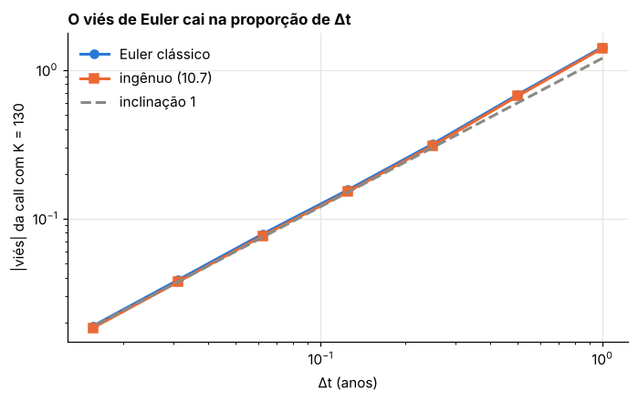
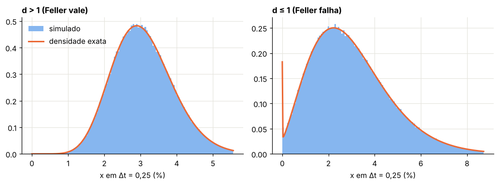
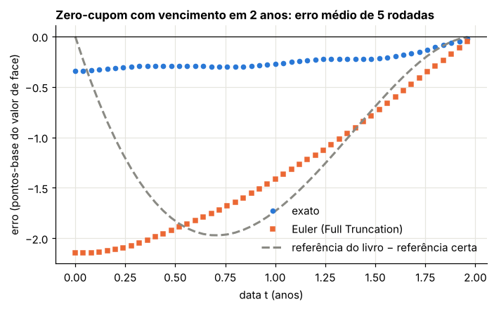
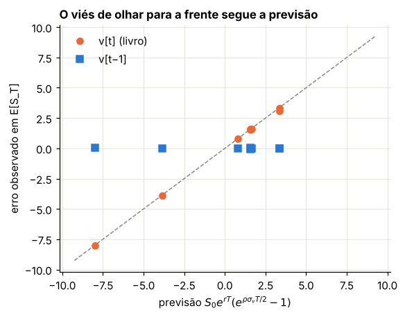
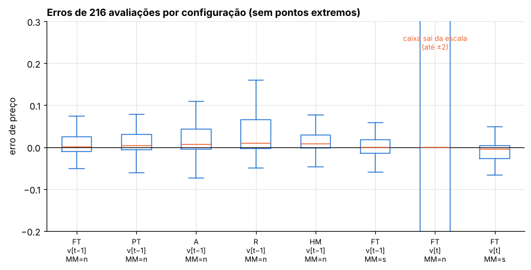
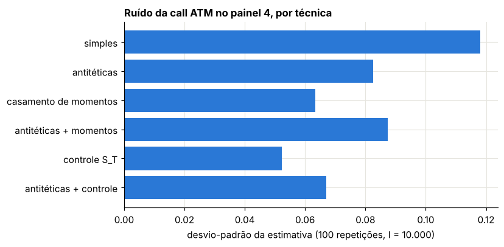
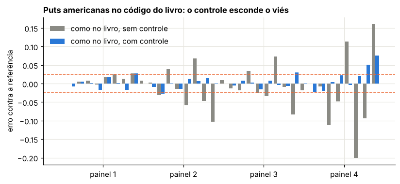

Módulo 12 — Monte Carlo: discretização e redução de variância#
Curso: Derivativos com Python, a partir de Derivatives Analytics with Python (Y. Hilpisch, Wiley, 2015). Este módulo cobre: capítulo 10 do livro.
O que você vai conseguir fazer ao final#
Distinguir erro forte de erro fraco e medir a ordem de convergência de um esquema de Euler.
Deduzir a transição exata do processo de raiz quadrada (CIR) e simulá-la com qui-quadrados.
Avaliar títulos zero-cupom no CIR por Monte Carlo e separar viés de discretização de ruído.
Conhecer os esquemas de Euler para a variância de Heston e saber quais deles são, de fato, diferentes.
Encontrar, medir e explicar um viés de “olhar para a frente” no código do livro.
Usar variáveis antitéticas, casamento de momentos e variáveis de controle, sabendo o que cada uma corrige.
Avaliar puts americanas no modelo Heston com juros CIR por LSM com variável de controle.
Onde estamos#
Até aqui, quase todo preço europeu veio de fórmulas: BSM no Módulo 5, Fourier nos Módulos 7, 8, 10 e 11. O Monte Carlo apareceu no Módulo 9, para as americanas, num mundo BSM em que a simulação de \(S\) era exata.
Agora o mundo é o do Módulo 11: variância e juros seguem processos de raiz quadrada. Simular exige discretizar, e discretizar introduz erros que não diminuem com mais trajetórias. Este módulo trata dessas duas fontes de erro, a de discretização (viés) e a estatística (ruído), e das técnicas para reduzir cada uma.
0. Preparação#
Além do ambiente padrão, a célula traz três ferramentas dos módulos anteriores:
a função característica de Heston na forma estável e o preço de Lewis (Módulos 7 e 11), que servem de referência “exata”;
o preço do título zero-cupom no CIR (Módulo 11);
o critério de acurácia do livro: um preço está certo se o erro absoluto for menor que 2,5 centavos ou o erro relativo for menor que 1,5%.
import time
import numpy as np
import pandas as pd
import matplotlib.pyplot as plt
from scipy.integrate import simpson, solve_ivp
from scipy.stats import norm, ncx2, kstest
from IPython.display import display
AZUL, LARANJA, VERDE, CINZA = "#2a78d6", "#eb6834", "#1baf7a", "#8a8a84"
RAMPA = ["#86b6ef", "#2a78d6", "#104281"]
plt.rcParams.update({
"figure.figsize": (7.2, 4.0), "figure.dpi": 110,
"axes.spines.top": False, "axes.spines.right": False,
"axes.grid": True, "grid.color": "#e6e5df", "grid.linewidth": 0.8,
"axes.axisbelow": True, "axes.titlesize": 11, "axes.titleweight": "bold",
"axes.titlelocation": "left", "lines.linewidth": 2.0, "legend.frameon": False,
"font.size": 10,
})
def f3(x):
"""Formata com três casas decimais no padrão brasileiro."""
return f"{x:,.3f}".replace(",", "§").replace(".", ",").replace("§", ".")
def tabela(df):
"""Exibe um DataFrame com os números reais em três casas decimais."""
def fmt(v):
if isinstance(v, (float, np.floating)):
return "n/d" if np.isnan(v) else f3(v)
return v
display(df.map(fmt))
_checks = {"n": 0}
def ok(condicao, mensagem):
"""Verificação do laboratório: interrompe o notebook se a conta não fechar."""
assert bool(condicao), f"FALHOU: {mensagem}"
_checks["n"] += 1
print(f"OK — {mensagem}")
def bsm(S, K, T, r, sig):
d1 = (np.log(S / K) + (r + 0.5 * sig**2) * T) / (sig * np.sqrt(T))
return S * norm.cdf(d1) - K * np.exp(-r * T) * norm.cdf(d1 - sig * np.sqrt(T))
def cf_heston(u, T, v0, kappa, theta, sigma, rho):
"""Função característica de ln(S_T/S_0) - rT no Heston, forma estável."""
xi = kappa - rho * sigma * 1j * u
d = np.sqrt(xi**2 + sigma**2 * (1j * u + u**2))
g = (xi - d) / (xi + d)
e = np.exp(-d * T)
A = kappa * theta / sigma**2 * ((xi - d) * T - 2 * np.log((1 - g * e) / (1 - g)))
B = (xi - d) / sigma**2 * (1 - e) / (1 - g * e)
return np.exp(A + B * v0)
_U = np.linspace(0, 300, 30001)
def call_heston(K, T, r, v0, kappa, theta, sigma, rho, S0=100.0):
"""Call europeia de Heston pela fórmula de Lewis (vetorizada em K)."""
K = np.atleast_1d(np.asarray(K, float))
k = np.log(S0 / K) + r * T
h = np.exp(1j * _U * k[:, None]) * cf_heston(_U - 0.5j, T, v0, kappa, theta, sigma, rho)
integral = simpson(h.real / (_U**2 + 0.25), x=_U, axis=1)
return S0 - np.sqrt(S0 * K) * np.exp(-0.5 * r * T) / np.pi * integral
def zcb_cir(r0, kappa, theta, sigma, tau):
"""Preço do zero-cupom no CIR (Módulo 11)."""
g = np.sqrt(kappa**2 + 2 * sigma**2)
e = np.exp(g * tau) - 1
den = 2 * g + (kappa + g) * e
A = (2 * g * np.exp((kappa + g) * tau / 2) / den) ** (2 * kappa * theta / sigma**2)
return A * np.exp(-2 * e / den * r0)
def acerto(erro, ref, abs_tol=0.025, rel_tol=0.015):
"""Critério do livro: certo se |erro| < 2,5 centavos ou |erro| < 1,5% do preço."""
erro, ref = np.asarray(erro), np.asarray(ref)
return (np.abs(erro) < abs_tol) | (np.abs(erro) < rel_tol * np.abs(ref))
print("Ambiente pronto.")
Ambiente pronto.
1. Discretizar uma equação diferencial estocástica#
Livro: §10.1 e §10.3 (equações 10.6 e 10.7)
1.1 O esquema de Euler, passo a passo#
Considere \(dX_t = a(X_t)\,dt + b(X_t)\,dW_t\). Dividimos \([0, T]\) em \(M\) passos de tamanho \(\Delta t = T/M\). Num passo de \(s\) a \(t = s + \Delta t\), a solução é
Euler congela os coeficientes no início do passo, \(a(X_u) \approx a(X_s)\) e \(b(X_u) \approx b(X_s)\):
Repare no detalhe que vai importar na Seção 4: o coeficiente \(b\) é avaliado em \(X_s\), um valor conhecido antes do choque \(z\). É isso que faz a integral estocástica de Itô ter média zero: \(\mathbb{E}[b(X_s)\,z] = \mathbb{E}[b(X_s)]\,\mathbb{E}[z] = 0\), porque \(z\) é independente do passado.
1.2 Dois tipos de erro#
Seja \(\hat X_T\) o valor simulado e \(X_T\) o verdadeiro, ambos com o mesmo browniano.
Erro forte: \(\mathbb{E}\,|\hat X_T - X_T|\). Mede se as trajetórias estão certas. Para Euler, cai como \(\Delta t^{1/2}\).
Erro fraco: \(|\mathbb{E}[f(\hat X_T)] - \mathbb{E}[f(X_T)]|\). Mede se as distribuições estão certas. Para Euler, cai como \(\Delta t^{1}\).
Para preço de opção europeia, só o erro fraco interessa: queremos a média do payoff. O erro fraco é um viés: ele não diminui com mais trajetórias, só com mais passos.
1.3 Três esquemas para o índice#
Para \(dS = rS\,dt + \sigma S\,dW\) há três escolhas naturais:
Esquema |
Passo |
Observação |
|---|---|---|
Euler clássico |
\(S_t = S_s(1 + r\Delta t + \sigma\sqrt{\Delta t}\,z)\) |
média \((1+r\Delta t)\), não \(e^{r\Delta t}\) |
Ingênuo (10.7) |
\(S_t = S_s(e^{r\Delta t} + \sigma\sqrt{\Delta t}\,z)\) |
média certa, distribuição normal no passo |
Log-Euler (10.6) |
\(S_t = S_s\exp\!\big((r - \tfrac12\sigma^2)\Delta t + \sigma\sqrt{\Delta t}\,z\big)\) |
exato para \(\sigma\) constante |
O log-Euler vem de aplicar Itô a \(\ln S\) (Módulo 4): \(d\ln S = (r - \tfrac12\sigma^2)dt + \sigma\,dW\), uma equação de coeficientes constantes, que Euler integra sem erro. Com volatilidade estocástica ele deixa de ser exato, mas continua sendo o melhor ponto de partida.
Laboratório 1 — A ordem do erro fraco#
Usamos uma call fora do dinheiro (\(K = 130\)), em que o viés é mais visível. Para medir um viés de poucos centavos sem que o ruído o encubra, usamos números aleatórios comuns: geramos os incrementos brownianos numa grade fina e os somamos para as grades grossas. Assim, todos os esquemas veem o mesmo \(W_T\), e o log-Euler (exato) dá o payoff de referência trajetória a trajetória. A diferença média entre um esquema e a referência é o viés, com pouquíssimo ruído.
S0, K, r, sig, T = 100.0, 130.0, 0.05, 0.3, 1.0 # call fora do dinheiro
I, Mfino = 200_000, 64
rng = np.random.default_rng(12)
dW = rng.standard_normal((Mfino, I)) * np.sqrt(T / Mfino)
payoff_exato = np.maximum(S0 * np.exp((r - 0.5 * sig**2) * T + sig * dW.sum(0)) - K, 0)
linhas = []
for M in [1, 2, 4, 8, 16, 32, 64]:
dt = T / M
inc = dW.reshape(M, Mfino // M, I).sum(1) # incrementos da grade grossa
S_cl = S0 * np.prod(1 + r * dt + sig * inc, axis=0)
S_in = S0 * np.prod(np.exp(r * dt) + sig * inc, axis=0)
vies_cl = np.exp(-r * T) * np.mean(np.maximum(S_cl - K, 0) - payoff_exato)
vies_in = np.exp(-r * T) * np.mean(np.maximum(S_in - K, 0) - payoff_exato)
linhas.append((M, dt, vies_cl, vies_in))
tab1 = pd.DataFrame(linhas, columns=["M", "Δt", "viés Euler clássico", "viés ingênuo (10.7)"])
tabela(tab1)
print("preço exato BSM:", f3(bsm(S0, K, T, r, sig)),
"| média MC do log-Euler:", f3(np.exp(-r * T) * payoff_exato.mean()))
| M | Δt | viés Euler clássico | viés ingênuo (10.7) | |
|---|---|---|---|---|
| 0 | 1 | 1,000 | -1,425 | -1,400 |
| 1 | 2 | 0,500 | -0,681 | -0,666 |
| 2 | 4 | 0,250 | -0,318 | -0,309 |
| 3 | 8 | 0,125 | -0,156 | -0,151 |
| 4 | 16 | 0,062 | -0,079 | -0,077 |
| 5 | 32 | 0,031 | -0,039 | -0,037 |
| 6 | 64 | 0,016 | -0,019 | -0,018 |
preço exato BSM: 4,673 | média MC do log-Euler: 4,633
A tabela mostra o viés caindo pela metade quando \(M\) dobra: é a assinatura da ordem 1. Vamos estimá-la pela inclinação em escala log-log, usando \(M \ge 4\) (para \(M\) muito pequeno, termos de ordem superior ainda pesam).
sel = tab1["M"] >= 4
p_cl = np.polyfit(np.log(tab1.loc[sel, "Δt"]), np.log(np.abs(tab1.loc[sel, "viés Euler clássico"])), 1)[0]
p_in = np.polyfit(np.log(tab1.loc[sel, "Δt"]), np.log(np.abs(tab1.loc[sel, "viés ingênuo (10.7)"])), 1)[0]
print("ordem estimada — clássico:", f3(p_cl), "| ingênuo:", f3(p_in))
fig, ax = plt.subplots()
ax.loglog(tab1["Δt"], np.abs(tab1["viés Euler clássico"]), "o-", color=AZUL, label="Euler clássico")
ax.loglog(tab1["Δt"], np.abs(tab1["viés ingênuo (10.7)"]), "s-", color=LARANJA, label="ingênuo (10.7)")
ax.loglog(tab1["Δt"], 1.2 * tab1["Δt"], "--", color=CINZA, label="inclinação 1")
ax.set_xlabel("Δt (anos)")
ax.set_ylabel("|viés| da call com K = 130")
ax.set_title("O viés de Euler cai na proporção de Δt")
ax.legend()
plt.show()
ok(0.8 < p_cl < 1.2, "o erro fraco do Euler clássico tem ordem 1")
ok(0.8 < p_in < 1.2, "o erro fraco do esquema ingênuo também tem ordem 1")
ok(abs(np.exp(-r * T) * payoff_exato.mean() - bsm(S0, K, T, r, sig)) < 0.1,
"o log-Euler com σ constante reproduz o BSM, a menos do ruído")
ordem estimada — clássico: 1,015 | ingênuo: 1,016

OK — o erro fraco do Euler clássico tem ordem 1
OK — o erro fraco do esquema ingênuo também tem ordem 1
OK — o log-Euler com σ constante reproduz o BSM, a menos do ruído
O que aprendemos. Com 64 passos por ano o viés ainda é de cerca de 2 centavos numa call de uns 4,7, e sempre para baixo. O esquema ingênuo tem a média certa a cada passo, mas a distribuição errada; e o preço de uma opção depende da distribuição. A lição para o resto do módulo: acertar a média de \(S_T\) não garante acertar o preço, e errar a média garante errar.
2. O processo de raiz quadrada: a transição exata#
Livro: §10.2
O processo
é a dinâmica dos juros no CIR e da variância no Heston. Ao contrário do caso geral, aqui a lei de \(x_t\) dado \(x_s\) é conhecida, e podemos simular sem erro de discretização.
2.1 Dedução pela estrutura afim#
No Módulo 11, deduzimos o zero-cupom tentando \(\exp(A + B\,x)\). Fazemos o mesmo com a função geradora de momentos. Seja \(\tau = t - s\) e \(w\) real com \(1 - 2c(\tau)w > 0\). Procuramos
Passo 1 — as equações. O lado esquerdo, como função de \((s, x_s)\), é uma martingal; por Feynman-Kac, satisfaz \(-\partial_\tau F + \kappa(\theta - x)F_x + \tfrac12\sigma^2 xF_{xx} = 0\), com \(F(0, x) = e^{wx}\). Substituindo a forma afim e separando os termos com \(x\) dos sem \(x\):
Passo 2 — resolver \(B\). É uma equação de Bernoulli. Com \(u = 1/B\), temos \(u' = -B'/B^2 = \kappa u - \tfrac12\sigma^2\), que é linear:
Passo 3 — resolver \(A\). Como \(\tfrac{d}{d\tau}\ln(1 - 2cw) = -\tfrac{\sigma^2}{2}\,\tfrac{w e^{-\kappa\tau}}{1 - 2cw} = -\tfrac{\sigma^2}{2}B\), temos
Passo 4 — reconhecer a distribuição. Juntando,
A geradora de momentos de uma qui-quadrado não central \(Y \sim \chi'^2_d(\lambda)\) é \(\mathbb{E}[e^{vY}] = (1 - 2v)^{-d/2}\exp\big(\lambda v/(1 - 2v)\big)\). Com \(v = cw\), as duas coincidem. Logo
É a fórmula do livro. Note que \(d\) não depende de \(\Delta t\), e que a condição de Feller \(2\kappa\theta \ge \sigma^2\) é exatamente \(d \ge 2\).
2.2 Como sortear uma qui-quadrado não central#
O livro usa duas decomposições, que vêm direto da definição \(\chi'^2_d(\lambda) = \sum_{j=1}^{d}(z_j + \mu_j)^2\) com \(\sum\mu_j^2 = \lambda\):
Se \(d > 1\): ponha toda a não centralidade numa coordenada: \(\chi'^2_d(\lambda) = (z + \sqrt\lambda)^2 + \chi^2_{d-1}\).
Se \(d \le 1\) (aí \(d - 1 \le 0\) não serve): use a mistura de Poisson \(\chi'^2_d(\lambda) = \chi^2_{d + 2N}\), com \(N \sim \text{Poisson}(\lambda/2)\).
Os dois primeiros momentos condicionais, que vamos conferir, são
Laboratório 2 — Conferir a transição exata#
Três conferências: (a) a solução fechada de \(B\) e \(A\) contra a integração numérica das equações; (b) as duas decomposições contra os momentos teóricos; (c) a distribuição inteira contra a do SciPy, por um teste de Kolmogorov-Smirnov.
def cir_constantes(kappa, theta, sigma, dt):
c = sigma**2 * (1 - np.exp(-kappa * dt)) / (4 * kappa)
d = 4 * kappa * theta / sigma**2
return c, d
def cir_exato_passo(x, kappa, theta, sigma, dt, rng):
"""Um passo exato do processo de raiz quadrada, pelas decomposições do livro."""
c, d = cir_constantes(kappa, theta, sigma, dt)
lam = x * np.exp(-kappa * dt) / c
if d > 1:
z = rng.standard_normal(x.shape)
return c * ((z + np.sqrt(lam)) ** 2 + rng.chisquare(d - 1, x.shape))
N = rng.poisson(lam / 2)
return c * rng.chisquare(d + 2 * N)
# (a) Riccati numérica contra a solução fechada
kappa, theta, sigma, tau, w = 0.3, 0.04, 0.1, 2.0, 3.0
sol = solve_ivp(lambda t, y: [kappa * theta * y[1], -kappa * y[1] + 0.5 * sigma**2 * y[1] ** 2],
[0, tau], [0.0, w], rtol=1e-11, atol=1e-13)
A_num, B_num = sol.y[:, -1]
c, d = cir_constantes(kappa, theta, sigma, tau)
B_fec = w * np.exp(-kappa * tau) / (1 - 2 * c * w)
A_fec = -d / 2 * np.log(1 - 2 * c * w)
print("B: numérico", f3(B_num), "fechado", f3(B_fec), "| A: numérico", f3(A_num), "fechado", f3(A_fec))
ok(abs(B_num - B_fec) < 1e-8 and abs(A_num - A_fec) < 1e-8, "a solução fechada da Riccati confere com a integração numérica")
# (b) e (c): momentos e distribuição, nos dois regimes de d
rng = np.random.default_rng(2)
casos = {"d > 1 (Feller vale)": (0.3, 0.04, 0.1), "d ≤ 1 (Feller falha)": (0.1, 0.03, 0.2)}
x_s, dt, n = 0.03, 0.25, 400_000
linhas = []
amostras = {}
for nome, (kappa, theta, sigma) in casos.items():
c, d = cir_constantes(kappa, theta, sigma, dt)
xt = cir_exato_passo(np.full(n, x_s), kappa, theta, sigma, dt, rng)
e = np.exp(-kappa * dt)
media = theta + (x_s - theta) * e
var = x_s * sigma**2 * e / kappa * (1 - e) + theta * sigma**2 / (2 * kappa) * (1 - e) ** 2
ks = kstest(xt[:20000] / c, ncx2(d, x_s * e / c).cdf).pvalue
linhas.append((nome, d, xt.mean() * 100, media * 100, xt.std() * 100, np.sqrt(var) * 100, ks))
amostras[nome] = (xt, c, d, x_s * e / c)
tab2 = pd.DataFrame(linhas, columns=["caso", "d", "média MC (%)", "média teórica (%)",
"desvio MC (%)", "desvio teórico (%)", "p-valor KS"])
tabela(tab2)
for _, l in tab2.iterrows():
ok(abs(l["média MC (%)"] / l["média teórica (%)"] - 1) < 0.005, f"{l['caso']}: a média confere")
ok(abs(l["desvio MC (%)"] / l["desvio teórico (%)"] - 1) < 0.01, f"{l['caso']}: o desvio confere")
ok(l["p-valor KS"] > 0.001, f"{l['caso']}: o teste KS não rejeita a qui-quadrado não central")
B: numérico 1,684 fechado 1,684 | A: numérico 0,055 fechado 0,055
OK — a solução fechada da Riccati confere com a integração numérica
| caso | d | média MC (%) | média teórica (%) | desvio MC (%) | desvio teórico (%) | p-valor KS | |
|---|---|---|---|---|---|---|---|
| 0 | d > 1 (Feller vale) | 4,800 | 3,074 | 3,072 | 0,840 | 0,840 | 0,243 |
| 1 | d ≤ 1 (Feller falha) | 0,300 | 3,001 | 3,000 | 1,712 | 1,711 | 0,999 |
OK — d > 1 (Feller vale): a média confere
OK — d > 1 (Feller vale): o desvio confere
OK — d > 1 (Feller vale): o teste KS não rejeita a qui-quadrado não central
OK — d ≤ 1 (Feller falha): a média confere
OK — d ≤ 1 (Feller falha): o desvio confere
OK — d ≤ 1 (Feller falha): o teste KS não rejeita a qui-quadrado não central
fig, axs = plt.subplots(1, 2, figsize=(9.5, 3.6))
for ax, (nome, (xt, c, d, lam)) in zip(axs, amostras.items()):
grade = np.linspace(1e-5, np.quantile(xt, 0.995), 300)
ax.hist(xt * 100, bins=120, range=(0, grade[-1] * 100), density=True, color=RAMPA[0], label="simulado")
ax.plot(grade * 100, ncx2(d, lam).pdf(grade / c) / c / 100, color=LARANJA, label="densidade exata")
ax.set_title(nome)
ax.set_xlabel("x em Δt = 0,25 (%)")
axs[0].legend()
plt.tight_layout()
plt.show()

Com \(d \le 1\) (direita), a densidade explode em zero: o processo encosta no zero com frequência. É justamente o regime em que os esquemas de Euler sofrem, porque o \(\sqrt{x}\) de um valor discretizado pode ficar negativo.
3. Zero-cupons no CIR por Monte Carlo#
Livro: §10.2 (Figuras 10.1 a 10.3)
3.1 O estimador#
Numa trajetória \(i\) com grade \(t_0 = 0 < t_1 < \dots < t_M = T\), descontamos o valor 1 de trás para a frente, com a regra do trapézio para a integral de \(r\):
Em \(t = 0\), a média \(\frac1I\sum_i B_{0,i}\) estima \(P(0, T)\), que conhecemos em forma fechada.
3.2 O que a média estima em \(t > 0\)#
Em \(t > 0\), cada \(B_{t,i}\) estima o preço do zero-cupom condicional à taxa \(r_{t,i}\) daquela trajetória. A média sobre trajetórias estima, portanto, \(\mathbb{E}[P(r_t, T - t)]\).
O livro compara essa média com \(P\big(\mathbb{E}[r_t], T - t\big)\). Como \(P\) é convexa em \(r\) (\(P = e^{A - br}\)), pela desigualdade de Jensen
A referência certa pode ser calculada exatamente com o que deduzimos na Seção 2: \(\mathbb{E}[e^{A - b\,r_t}] = e^{A}\,\mathbb{E}[e^{-b\,r_t}]\), e a esperança é a geradora de momentos da qui-quadrado não central em \(w = -b\).
3.3 O esquema de Euler para comparação#
O livro usa o Full Truncation (10.2)-(10.3): trunca em zero dentro do drift e da raiz, e trunca a saída:
Laboratório 3 — Exato contra Euler, e a referência certa#
Usamos os parâmetros do livro: \(r_0 = 1\%\), \(\kappa_r = 0{,}1\), \(\theta_r = 3\%\), \(\sigma_r = 0{,}2\), \(T = 2\), \(M = 50\), \(I = 50.000\). Aqui \(d = 0{,}3\): a condição de Feller falha com folga.
def cir_euler_ft_passo(xh, kappa, theta, sigma, dt, z):
"""Full Truncation: devolve (x truncado, x̃ auxiliar)."""
p = np.maximum(xh, 0)
xh = xh + kappa * (theta - p) * dt + sigma * np.sqrt(p * dt) * z
return np.maximum(xh, 0), xh
def cir_trajetorias(r0, kappa, theta, sigma, T, M, I, rng, esquema="exato"):
dt = T / M
x = np.empty((M + 1, I))
x[0] = r0
xh = np.full(I, r0)
for t in range(M):
if esquema == "exato":
x[t + 1] = cir_exato_passo(x[t], kappa, theta, sigma, dt, rng)
else:
x[t + 1], xh = cir_euler_ft_passo(xh, kappa, theta, sigma, dt, rng.standard_normal(I))
return x
def zcb_mc_todas_datas(x, dt):
"""B_t estimado em cada data t_j, j = 0..M-1 (desconto trapezoidal de T até t_j)."""
fatias = (x[1:] + x[:-1]) / 2 * dt
return np.exp(-np.cumsum(fatias[::-1], axis=0))[::-1].mean(axis=1)
r0, kr, thr, sr, T, M, I = 0.01, 0.1, 0.03, 0.2, 2.0, 50, 50_000
dt = T / M
ts = np.arange(M) * dt
def ref_jensen(t):
"""E[P(r_t, T-t)] exato, pela geradora de momentos da qui-quadrado não central."""
if t == 0:
return zcb_cir(r0, kr, thr, sr, T)
tau = T - t
P_em_zero = zcb_cir(0.0, kr, thr, sr, tau) # e^A
b = -np.log(zcb_cir(1.0, kr, thr, sr, tau) / P_em_zero) # P = e^{A - b r}
c, d = cir_constantes(kr, thr, sr, t)
lam = r0 * np.exp(-kr * t) / c
w = -b
return P_em_zero * (1 - 2 * c * w) ** (-d / 2) * np.exp(lam * c * w / (1 - 2 * c * w))
ref_certa = np.array([ref_jensen(t) for t in ts])
ref_livro = np.array([zcb_cir(thr + np.exp(-kr * t) * (r0 - thr), kr, thr, sr, T - t) for t in ts])
rng = np.random.default_rng(10)
R = 5
est = {e: np.array([zcb_mc_todas_datas(cir_trajetorias(r0, kr, thr, sr, T, M, I, rng, e), dt)
for _ in range(R)]) for e in ["exato", "euler"]}
linhas = []
for e in est:
erro = est[e] - ref_certa
linhas.append((e, 1e4 * erro[:, 0].mean(), 1e4 * erro.mean(), 1e4 * erro.std() / np.sqrt(erro.size),
1e4 * (est[e] - ref_livro).mean()))
tab3 = pd.DataFrame(linhas, columns=["esquema", "erro em t=0 (pb)", "erro médio (pb)", "erro-padrão (pb)",
"erro contra a referência do livro (pb)"])
tabela(tab3)
gap = ref_certa - ref_livro
print("diferença de Jensen entre as referências: máxima", f3(1e4 * gap.max()), "pb")
| esquema | erro em t=0 (pb) | erro médio (pb) | erro-padrão (pb) | erro contra a referência do livro (pb) | |
|---|---|---|---|---|---|
| 0 | exato | -0,340 | -0,245 | 0,103 | 0,881 |
| 1 | euler | -2,142 | -1,325 | 0,097 | -0,198 |
diferença de Jensen entre as referências: máxima 1,970 pb
fig, ax = plt.subplots()
ax.plot(ts, 1e4 * (est["exato"] - ref_certa).mean(0), "o", ms=4, color=AZUL, label="exato")
ax.plot(ts, 1e4 * (est["euler"] - ref_certa).mean(0), "s", ms=4, color=LARANJA, label="Euler (Full Truncation)")
ax.plot(ts, -1e4 * gap, "--", color=CINZA, label="referência do livro − referência certa")
ax.axhline(0, color="black", lw=0.8)
ax.set_xlabel("data t (anos)")
ax.set_ylabel("erro (pontos-base do valor de face)")
ax.set_title("Zero-cupom com vencimento em 2 anos: erro médio de 5 rodadas")
ax.legend()
plt.show()
ok(abs(tab3.loc[0, "erro médio (pb)"]) < 0.25 * abs(tab3.loc[1, "erro médio (pb)"]) + 3 * tab3.loc[0, "erro-padrão (pb)"],
"o esquema exato tem erro muito menor que o do Euler")
ok(tab3.loc[1, "erro médio (pb)"] < -3 * tab3.loc[1, "erro-padrão (pb)"],
"o Euler tem viés para baixo, como no livro")
ok(np.all(gap[1:] > 0), "a desigualdade de Jensen: E[P(r_t)] > P(E[r_t]) em todas as datas t > 0")

OK — o esquema exato tem erro muito menor que o do Euler
OK — o Euler tem viés para baixo, como no livro
OK — a desigualdade de Jensen: E[P(r_t)] > P(E[r_t]) em todas as datas t > 0
O que aprendemos.
O viés do Euler existe e é para baixo, como diz o livro, mas é pequeno: um a dois pontos-base do valor de face.
O “exato” ainda carrega o pequeno erro da regra do trapézio na integral de \(r\): a transição de \(r\) é exata, a integral não.
Ele é da mesma ordem que o erro da referência usada nas Figuras 10.2 e 10.3. Contra a referência do livro, o exato parece ter viés para cima e o Euler parece quase sem viés. Para comparar esquemas, a referência precisa ser mais exata que a diferença que se quer medir.
4. O modelo de Heston: discretizar a variância#
Livro: §10.3
4.1 O índice#
Com juros constantes, sob \(Q\):
Pelo Itô, \(d\ln S = (r - \tfrac12 v)\,dt + \sqrt{v}\,dZ^1\). O log-Euler (10.6) congela \(v\) no início do passo:
Para correlacionar, usamos Cholesky: \(z^2_t = \rho\,z^1_t + \sqrt{1 - \rho^2}\,\varepsilon_t\).
4.2 Cinco esquemas com sete nomes#
A transição exata da Seção 2 não se correlaciona facilmente com \(z^1\). Por isso o livro usa esquemas de Euler, que só diferem no que fazem quando \(\tilde x\) fica negativo. Na notação de Lord, Koekkoek e van Dijk (2006), o passo é
Esquema |
\(f_1\) |
\(f_2\) |
\(f_3\) |
|---|---|---|---|
Absorption (A) |
\(x^+\) |
\(x^+\) |
\(x^+\) |
Reflection (R) |
\(\lvert x\rvert\) |
\(\lvert x\rvert\) |
\(\lvert x\rvert\) |
Higham-Mao (HM) |
\(x\) |
\(x\) |
\(\lvert x\rvert\) |
Partial Truncation (PT) |
\(x\) |
\(x\) |
\(x^+\) |
Full Truncation (FT) |
\(x\) |
\(x^+\) |
\(x^+\) |
O livro lista mais dois: Truncation e Simple Reflection. Olhando o código (§10.6.3), Truncation recalcula a partir de \(x_s = \max(0, \tilde x_s)\) com drift e raiz em \(x_s\): é exatamente o Absorption. Simple Reflection faz o mesmo com \(\lvert\cdot\rvert\): é exatamente o Reflection. O laboratório confere isso trajetória a trajetória. (No Reflection, diferenças de arredondamento da ordem de \(10^{-17}\) podem crescer um pouco quando \(x\) passa muito perto de zero, porque a derivada de \(\sqrt{x}\) explode ali; por isso a tolerância é maior nesse caso.)
Nota. O código do livro para o Reflection usa
xh[t-1]sem valor absoluto no primeiro termo, ao contrário da fórmula impressa e de Lord et al. Aqui seguimos a fórmula.
ESQUEMAS = ["FT", "PT", "A", "R", "HM"]
def passo_v(esquema, xh, kappa, theta, sigma, dt, z):
"""Um passo dos esquemas de Lord et al. Recebe x̃_s, devolve (x_t, x̃_t)."""
if esquema == "FT":
p = np.maximum(xh, 0); xh = xh + kappa * (theta - p) * dt + sigma * np.sqrt(p * dt) * z
return np.maximum(xh, 0), xh
if esquema == "PT":
p = np.maximum(xh, 0); xh = xh + kappa * (theta - xh) * dt + sigma * np.sqrt(p * dt) * z
return np.maximum(xh, 0), xh
if esquema == "A":
p = np.maximum(xh, 0); xh = p + kappa * (theta - p) * dt + sigma * np.sqrt(p * dt) * z
return np.maximum(xh, 0), xh
if esquema == "R":
p = np.abs(xh); xh = p + kappa * (theta - p) * dt + sigma * np.sqrt(p * dt) * z
return np.abs(xh), xh
if esquema == "HM":
p = np.abs(xh); xh = xh + kappa * (theta - xh) * dt + sigma * np.sqrt(p * dt) * z
return np.abs(xh), xh
raise ValueError(esquema)
# Os dois esquemas "extras" do livro, transcritos do código da §10.6.3
def truncation_livro(x, kappa, theta, sigma, dt, z):
return np.maximum(0, x + kappa * (theta - x) * dt + np.sqrt(x) * sigma * z * np.sqrt(dt))
def simple_reflection_livro(x, kappa, theta, sigma, dt, z):
return np.abs(x + kappa * (theta - x) * dt + np.sqrt(x) * sigma * z * np.sqrt(dt))
rng = np.random.default_rng(4)
kappa, theta, sigma, dt = 0.75, 0.02, 0.3, 1 / 50
Z = rng.standard_normal((100, 20_000))
xa = xh_a = np.full(20_000, 0.04); xt_ = xt0 = np.full(20_000, 0.04)
xr = xh_r = np.full(20_000, 0.04); xs_ = np.full(20_000, 0.04)
for z in Z:
xa, xh_a = passo_v("A", xh_a, kappa, theta, sigma, dt, z)
xt_ = truncation_livro(xt_, kappa, theta, sigma, dt, z)
xr, xh_r = passo_v("R", xh_r, kappa, theta, sigma, dt, z)
xs_ = simple_reflection_livro(xs_, kappa, theta, sigma, dt, z)
print("fração de passos com x̃ < 0 no Absorption:", f3(np.mean(xa == 0)))
ok(np.allclose(xa, xt_, rtol=0, atol=1e-14), "Truncation do livro coincide com Absorption em todas as trajetórias")
print("maior diferença Reflection × Simple Reflection:", f"{np.abs(xr - xs_).max():.1e}")
ok(np.abs(xr - xs_).max() < 1e-8, "Simple Reflection do livro coincide com Reflection, a menos de arredondamento")
fração de passos com x̃ < 0 no Absorption: 0,052
OK — Truncation do livro coincide com Absorption em todas as trajetórias
maior diferença Reflection × Simple Reflection: 1.2e-14
OK — Simple Reflection do livro coincide com Reflection, a menos de arredondamento
4.3 Um viés escondido no código do livro: olhar para a frente#
No código da §10.6.3, o passo do índice é
S[t] = S[t - 1] * np.exp((r - 0.5 * v[t]) * dt + np.sqrt(v[t]) * ran[row] * sdt - bias)
com v[t], a variância do fim do passo, e não v[t - 1]. O problema é que v[t] foi gerada com o choque \(z^2_t\), que é correlacionado com o mesmo \(z^1_t\) que multiplica a raiz. A propriedade da Seção 1.1 se perde: \(\sqrt{v_t}\) não é mais independente de \(z^1_t\).
Quanto vale o viés, passo a passo. Expandindo a raiz em primeira ordem em torno de \(v_s\):
Então
Cada passo ganha um drift espúrio de \(\tfrac12\rho\sigma_v\Delta t\) em \(\ln S\), que não some quando \(\Delta t \to 0\): somando \(M\) passos, o drift extra é \(\tfrac12\rho\sigma_vT\). A previsão é
Isso não é um erro de discretização, que diminui com \(\Delta t\): é um erro de modelo. O esquema converge para o processo errado (é a diferença entre as integrais de Itô e de Stratonovich, Módulo 4).
Com o bias do casamento de momentos, que subtrai a média amostral de \(\sqrt{v_t}\sqrt{\Delta t}\,z^1_t\) a cada passo, o drift espúrio é removido. Por isso a Tabela 10.1 do livro mostra um efeito tão dramático do casamento de momentos (erro quadrático médio de cerca de 3,7 para cerca de 0,001): ele está consertando o bug.
Laboratório 4 — O viés previsto e o observado#
Usamos os quatro painéis de Medvedev e Scaillet (2010) do livro, \(\theta_v = 0{,}02\), \(S_0 = 100\), \(r = 5\%\), 50 passos por ano, e simulamos o índice com v[t-1] (certo) e com v[t] (livro).
PAINEIS = [(0.01, 1.50, 0.15, 0.10), # (v0, κ_v, σ_v, ρ)
(0.04, 0.75, 0.30, 0.10),
(0.04, 1.50, 0.30, 0.10),
(0.04, 1.50, 0.15, -0.50)]
THETA_V, S0, r = 0.02, 100.0, 0.05
STRIKES = np.array([90.0, 100.0, 110.0])
PRAZOS = [1 / 12, 1.0, 2.0]
def heston_mc(painel, T, M0, I, rng, esquema="FT", adiante=False, mm=False, anti=True):
"""Simula S_T no Heston. adiante=True reproduz o v[t] do livro; mm=True aplica
o casamento de momentos dos normais e a correção de drift do livro."""
v0, kappa, sigma, rho = painel
M = max(int(round(M0 * T)), 1)
dt = T / M
if anti:
Z = rng.standard_normal((2, M, I // 2))
Z = np.concatenate([Z, -Z], axis=2)
else:
Z = rng.standard_normal((2, M, I))
if mm:
Z = (Z - Z.mean()) / Z.std()
v = np.full(I, v0); vh = v.copy(); x = np.zeros(I)
for t in range(M):
z1 = Z[0, t]
z2 = rho * z1 + np.sqrt(1 - rho**2) * Z[1, t]
v_novo, vh = passo_v(esquema, vh, kappa, THETA_V, sigma, dt, z2)
vu = v_novo if adiante else v
choque = np.sqrt(vu * dt) * z1
if mm:
choque = choque - choque.mean()
x += (r - 0.5 * vu) * dt + choque
v = v_novo
return S0 * np.exp(x)
rng = np.random.default_rng(5)
linhas = []
for i, p in enumerate(PAINEIS):
for T in (1.0, 2.0):
fwd = S0 * np.exp(r * T)
prev = fwd * (np.exp(p[3] * p[2] * T / 2) - 1)
e_certo = heston_mc(p, T, 50, 100_000, rng).mean() - fwd
e_livro = heston_mc(p, T, 50, 100_000, rng, adiante=True).mean() - fwd
linhas.append((i + 1, T, p[3] * p[2], prev, e_livro, e_certo))
tab4 = pd.DataFrame(linhas, columns=["painel", "T", "ρσ_v", "erro previsto de E[S_T]",
"erro com v[t] (livro)", "erro com v[t−1]"])
tabela(tab4)
| painel | T | ρσ_v | erro previsto de E[S_T] | erro com v[t] (livro) | erro com v[t−1] | |
|---|---|---|---|---|---|---|
| 0 | 1 | 1,000 | 0,015 | 0,791 | 0,793 | 0,008 |
| 1 | 1 | 2,000 | 0,015 | 1,670 | 1,579 | -0,011 |
| 2 | 2 | 1,000 | 0,030 | 1,589 | 1,555 | -0,068 |
| 3 | 2 | 2,000 | 0,030 | 3,366 | 3,101 | -0,006 |
| 4 | 3 | 1,000 | 0,030 | 1,589 | 1,601 | 0,065 |
| 5 | 3 | 2,000 | 0,030 | 3,366 | 3,289 | 0,017 |
| 6 | 4 | 1,000 | -0,075 | -3,869 | -3,919 | 0,014 |
| 7 | 4 | 2,000 | -0,075 | -7,986 | -8,049 | 0,021 |
fig, ax = plt.subplots(figsize=(5.6, 4.2))
lim = 1.15 * np.abs(tab4[["erro previsto de E[S_T]", "erro com v[t] (livro)"]]).values.max()
ax.plot([-lim, lim], [-lim, lim], "--", color=CINZA, lw=1)
ax.plot(tab4["erro previsto de E[S_T]"], tab4["erro com v[t] (livro)"], "o", color=LARANJA, label="v[t] (livro)")
ax.plot(tab4["erro previsto de E[S_T]"], tab4["erro com v[t−1]"], "s", color=AZUL, label="v[t−1]")
ax.set_xlabel(r"previsão $S_0e^{rT}(e^{\rho\sigma_vT/2}-1)$")
ax.set_ylabel("erro observado em E[S_T]")
ax.set_title("O viés de olhar para a frente segue a previsão")
ax.legend()
plt.show()
rel = tab4["erro com v[t] (livro)"] / tab4["erro previsto de E[S_T]"]
ok(np.all((rel > 0.75) & (rel < 1.25)), "o erro com v[t] fica a até 25% da previsão ½ρσ_vT em todos os casos")
ok(np.all(np.abs(tab4["erro com v[t−1]"]) < 0.25), "com v[t−1], o erro de E[S_T] é pequeno (menos de 25 centavos)")

OK — o erro com v[t] fica a até 25% da previsão ½ρσ_vT em todos os casos
OK — com v[t−1], o erro de E[S_T] é pequeno (menos de 25 centavos)
O viés com v[t] chega a 8 unidades num índice de 100 (painel 4, \(T = 2\)), e a previsão de primeira ordem o explica bem. Com v[t-1] sobra algo de poucos centavos, vindo da truncação e do ruído.
Há uma razão estrutural para o esquema certo acertar a média: com \(v_s\) conhecido no início do passo e \(z^1_t\) independente dele,
O preço descontado simulado é uma martingal exata, qualquer que seja \(\Delta t\) e qualquer que seja o esquema da variância.
5. O teste de Medvedev e Scaillet#
Livro: §10.3 (Tabelas 10.1 e 10.2, Figura 10.4)
O livro avalia calls e puts europeias nos quatro painéis, com \(T \in \{1/12, 1, 2\}\) e \(K \in \{90, 100, 110\}\): 36 opções de cada tipo. A referência é o preço de Fourier (aqui, Lewis). Um preço “erra” se viola os dois critérios de acurácia ao mesmo tempo.
Laboratório 5 — Reproduzir a Tabela 10.1 e ver o que muda#
Rodamos 3 vezes cada configuração, com \(I = 50.000\) trajetórias (antitéticas) e 50 passos por ano, sobre as 72 opções (calls e puts das mesmas trajetórias): 216 avaliações por linha. As puts usam o payoff simulado, não a paridade, como no livro.
REFS = {}
for i, p in enumerate(PAINEIS):
for T in PRAZOS:
C = call_heston(STRIKES, T, r, p[0], p[1], THETA_V, p[2], p[3])
REFS[i, T] = (C, C - S0 + STRIKES * np.exp(-r * T))
def teste_ms(rng, rodadas=3, I=50_000, M0=50, **kw):
erros, refs = [], []
for _ in range(rodadas):
for i, p in enumerate(PAINEIS):
for T in PRAZOS:
S = heston_mc(p, T, M0, I, rng, **kw)
df = np.exp(-r * T)
C = df * np.maximum(S[:, None] - STRIKES, 0).mean(0)
P = df * np.maximum(STRIKES - S[:, None], 0).mean(0)
erros += list(C - REFS[i, T][0]) + list(P - REFS[i, T][1])
refs += list(REFS[i, T][0]) + list(REFS[i, T][1])
erros, refs = np.array(erros), np.array(refs)
return erros, refs
configs = [("FT", "v[t−1]", False, dict(esquema="FT")),
("PT", "v[t−1]", False, dict(esquema="PT")),
("A", "v[t−1]", False, dict(esquema="A")),
("R", "v[t−1]", False, dict(esquema="R")),
("HM", "v[t−1]", False, dict(esquema="HM")),
("FT", "v[t−1]", True, dict(esquema="FT", mm=True)),
("FT", "v[t] (livro)", False, dict(esquema="FT", adiante=True)),
("FT", "v[t] (livro)", True, dict(esquema="FT", adiante=True, mm=True))]
rng = np.random.default_rng(250000)
t0 = time.time()
linhas, caixas = [], {}
for esq, idx, mm, kw in configs:
e, ref = teste_ms(rng, **kw)
n_err = int((~acerto(e, ref)).sum())
linhas.append((esq, idx, "sim" if mm else "não", n_err, len(e), e.mean(), np.mean(e**2)))
caixas[f"{esq}\n{idx.split()[0]}\nMM={'s' if mm else 'n'}"] = e
tab5 = pd.DataFrame(linhas, columns=["variância", "índice usa", "casamento de momentos",
"erros", "opções", "erro médio", "EQM"])
tabela(tab5)
print(f"tempo: {time.time() - t0:.1f} s")
| variância | índice usa | casamento de momentos | erros | opções | erro médio | EQM | |
|---|---|---|---|---|---|---|---|
| 0 | FT | v[t−1] | não | 9 | 216 | 0,007 | 0,002 |
| 1 | PT | v[t−1] | não | 12 | 216 | 0,012 | 0,002 |
| 2 | A | v[t−1] | não | 23 | 216 | 0,022 | 0,003 |
| 3 | R | v[t−1] | não | 42 | 216 | 0,046 | 0,010 |
| 4 | HM | v[t−1] | não | 21 | 216 | 0,025 | 0,004 |
| 5 | FT | v[t−1] | sim | 4 | 216 | 0,003 | 0,001 |
| 6 | FT | v[t] (livro) | não | 174 | 216 | 0,036 | 2,286 |
| 7 | FT | v[t] (livro) | sim | 5 | 216 | -0,011 | 0,001 |
tempo: 24.9 s
fig, ax = plt.subplots(figsize=(9.5, 4.2))
ax.boxplot(list(caixas.values()), tick_labels=list(caixas.keys()), showfliers=False,
medianprops=dict(color=LARANJA), boxprops=dict(color=AZUL), whiskerprops=dict(color=AZUL),
capprops=dict(color=AZUL))
ax.axhline(0, color="black", lw=0.8)
ax.set_ylim(-0.2, 0.3)
ax.annotate("caixa sai da escala\n(até ±2)", xy=(7, 0.27), ha="center", va="top", fontsize=8, color=LARANJA)
ax.set_ylabel("erro de preço")
ax.set_title("Erros de 216 avaliações por configuração (sem pontos extremos)")
ax.tick_params(axis="x", labelsize=8)
plt.show()
eqm = tab5.set_index(["variância", "índice usa", "casamento de momentos"])["EQM"]
erros = tab5.set_index(["variância", "índice usa", "casamento de momentos"])["erros"]
ok(eqm["FT", "v[t] (livro)", "não"] > 1.0, "o código do livro sem casamento de momentos tem EQM acima de 1, como na Tabela 10.1")
ok(erros["FT", "v[t] (livro)", "não"] > 0.6 * 216, "e erra a maioria das opções")
ok(eqm["FT", "v[t−1]", "não"] < 0.01, "com v[t−1], o Full Truncation acerta sem nenhuma correção (EQM < 0,01)")
ok(erros["FT", "v[t−1]", "não"] <= 0.05 * 216, "e erra no máximo 5% das opções")
ok(eqm["FT", "v[t] (livro)", "sim"] < 0.01, "o casamento de momentos conserta o código do livro")
ok(eqm["R", "v[t−1]", "não"] > eqm["FT", "v[t−1]", "não"], "o Reflection é pior que o Full Truncation")

OK — o código do livro sem casamento de momentos tem EQM acima de 1, como na Tabela 10.1
OK — e erra a maioria das opções
OK — com v[t−1], o Full Truncation acerta sem nenhuma correção (EQM < 0,01)
OK — e erra no máximo 5% das opções
OK — o casamento de momentos conserta o código do livro
OK — o Reflection é pior que o Full Truncation
O que aprendemos.
A linha “v[t] (livro), sem casamento de momentos” reproduz a Tabela 10.1: a grande maioria das opções erradas e EQM acima de 2, que é a média entre calls e puts (o livro relata cerca de 3,7 para as calls e 0,9 para as puts).
Com
v[t-1], o Full Truncation sem correção nenhuma já fica perto do nível que o livro só atinge com casamento de momentos. O “efeito impressionante” da Figura 10.4 é, quase todo, o conserto do bug.Entre os esquemas, Full Truncation e Partial Truncation são os melhores; Higham-Mao e Absorption ficam atrás; Reflection é o pior. Todos erram para cima. Refletir ou absorver no zero muda a variância de forma sistemática: refletir transforma um valor negativo num positivo do mesmo tamanho, o que infla a variância média. É o resultado de Lord et al. (2006), que o livro cita: o Full Truncation é o vencedor.
6. Redução de variância#
Livro: §10.3 e §10.4 (equação 10.8)
O viés se combate com esquemas melhores e mais passos. O ruído se combate com mais trajetórias, cujo custo é alto (o erro-padrão cai como \(1/\sqrt I\)), ou com técnicas de redução de variância.
6.1 Variáveis antitéticas#
Para cada vetor de choques \(z\), simulamos também \(-z\). O estimador de um par é \(\bar Y = (Y + Y')/2\), e
Comparado com duas trajetórias independentes (\(\sigma^2_Y/2\)), o ganho depende de \(\text{Corr}(Y, Y') < 0\). Para payoffs monótonos no choque (uma call bem dentro do dinheiro) a correlação é muito negativa e o ganho é grande; para payoffs simétricos, como um straddle, pode não haver ganho nenhum.
6.2 Casamento de momentos#
Depois de gerar os normais, impomos média amostral 0 e desvio amostral 1: \(z \leftarrow (z - \bar z)/s_z\). O livro faz isso sobre o array inteiro, e ainda subtrai, a cada passo, a média amostral do choque do índice. Essa última correção força \(\frac1I\sum_i S_{t,i} = \) média de \(S_s e^{r\Delta t}\), uma ideia conhecida como martingal empírica (Duan e Simonato, 1998).
Duas observações. As trajetórias deixam de ser independentes, e o erro-padrão usual deixa de valer. E, como vimos, essa correção também apaga erros de modelo, como o da Seção 4.3, o que é útil, mas esconde o problema.
6.3 Variáveis de controle#
Seja \(Y\) o payoff descontado que queremos e \(X\) outro, simulado nas mesmas trajetórias, cuja média \(\mathbb{E}[X]\) conhecemos. O estimador
é não viesado para qualquer \(\lambda\). Sua variância é \(\sigma^2_Y - 2\lambda\,\text{Cov}(X, Y) + \lambda^2\sigma^2_X\), mínima em
Com correlação de 0,99, a variância cai 50 vezes: o mesmo que 50 vezes mais trajetórias. O livro usa a put europeia como controle da americana (10.8), com \(\lambda = 1\).
Laboratório 6 — Quanto cada técnica reduz o ruído#
Para a call de \(K = 100\), \(T = 1\), painel 4, repetimos 100 vezes cada configuração com \(I = 10.000\) e medimos o desvio-padrão das estimativas. Como controle, usamos o próprio \(e^{-rT}S_T\), cuja média é \(S_0\) exatamente (a martingal da Seção 4.3), com \(\lambda^*\) estimado na amostra.
p, T, Kc, I, rep = PAINEIS[3], 1.0, 100.0, 10_000, 100
ref_c = REFS[3, 1.0][0][1]
df = np.exp(-r * T)
rng = np.random.default_rng(6)
resultado = {}
for nome, kw, cv in [("simples", dict(anti=False), False),
("antitéticas", dict(anti=True), False),
("casamento de momentos", dict(anti=False, mm=True), False),
("antitéticas + momentos", dict(anti=True, mm=True), False),
("controle S_T", dict(anti=False), True),
("antitéticas + controle", dict(anti=True), True)]:
est = []
for _ in range(rep):
S = heston_mc(p, T, 50, I, rng, **kw)
Y = df * np.maximum(S - Kc, 0)
if cv:
X = df * S
lam = np.cov(X, Y)[0, 1] / X.var()
Y = Y - lam * (X - S0)
est.append(Y.mean())
est = np.array(est)
resultado[nome] = (est.mean() - ref_c, est.std(ddof=1))
tab6 = pd.DataFrame([(k, v[0], v[1], (resultado["simples"][1] / v[1]) ** 2) for k, v in resultado.items()],
columns=["técnica", "viés médio", "desvio-padrão", "ganho equivalente em trajetórias"])
tabela(tab6)
| técnica | viés médio | desvio-padrão | ganho equivalente em trajetórias | |
|---|---|---|---|---|
| 0 | simples | 0,002 | 0,118 | 1,000 |
| 1 | antitéticas | 0,003 | 0,083 | 2,042 |
| 2 | casamento de momentos | 0,001 | 0,063 | 3,463 |
| 3 | antitéticas + momentos | 0,016 | 0,087 | 1,819 |
| 4 | controle S_T | 0,009 | 0,052 | 5,111 |
| 5 | antitéticas + controle | 0,005 | 0,067 | 3,108 |
fig, ax = plt.subplots(figsize=(7.2, 3.6))
ax.barh(tab6["técnica"][::-1], tab6["desvio-padrão"][::-1], color=AZUL)
ax.set_xlabel("desvio-padrão da estimativa (100 repetições, I = 10.000)")
ax.set_title("Ruído da call ATM no painel 4, por técnica")
plt.show()
g = tab6.set_index("técnica")["ganho equivalente em trajetórias"]
ok(g["antitéticas"] > 1.5, "as antitéticas reduzem a variância de uma call (payoff monótono no choque)")
ok(g["controle S_T"] > 2.5, "o controle S_T rende mais que 2,5 vezes mais trajetórias")
ok(g["controle S_T"] > g["antitéticas"], "para esta call, o controle supera as antitéticas")
ok(abs(resultado["antitéticas + controle"][0]) < 3 * resultado["antitéticas + controle"][1] / np.sqrt(rep) + 0.01,
"o estimador com controle não tem viés detectável")

OK — as antitéticas reduzem a variância de uma call (payoff monótono no choque)
OK — o controle S_T rende mais que 2,5 vezes mais trajetórias
OK — para esta call, o controle supera as antitéticas
OK — o estimador com controle não tem viés detectável
Para esta call, o controle \(S_T\) é mais eficaz que as antitéticas, mas os dois não se somam: atacam a mesma coisa, a parte do payoff que é linear nos choques. As antitéticas cancelam essa parte por simetria; o controle \(S_T\), por regressão. O casamento de momentos rende algo parecido com as antitéticas, porque também corrige o primeiro momento dos choques. Combinadas, aqui renderam até menos que o controle sozinho. As técnicas só se complementam quando miram partes diferentes do payoff. (Os desvios-padrão de 100 repetições têm cerca de 7% de imprecisão; a ordem entre as linhas próximas pode mudar com outra semente.)
7. Americanas no Heston com juros CIR#
Livro: §10.4 e §10.6.4 (Tabelas 10.3 e 10.4)
7.1 O modelo e o algoritmo#
O modelo agora tem três fatores: \(S\) (Heston), \(v\) (raiz quadrada) e \(r\) (CIR, com \(r_0 = 4\%\), \(\kappa_r = 0{,}3\), \(\theta_r = 4\%\), \(\sigma_r = 0{,}1\)), com \(Z^3\) independente. O livro avalia puts americanas com \(T \in \{1/12, 1/4, 1/2\}\) e \(K \in \{90, 100, 110\}\) nos quatro painéis: 36 opções, contra as referências de Medvedev e Scaillet (LSM com 1 milhão de trajetórias e 500 passos).
O algoritmo é o LSM do Módulo 9, com quatro ingredientes:
Índice: log-Euler com a média trapezoidal dos juros, \(\ln S_t = \ln S_s + \big(\tfrac{r_s + r_t}{2} - \tfrac{v}{2}\big)\Delta t + \sqrt{v}\sqrt{\Delta t}\,z^1_t\).
Regressão: só trajetórias dentro do dinheiro, com 11 funções de base: \(1, r, v, S, r^2, v^2, S^2, vr, Sr, Sv, Svr\).
Desconto: trajetória a trajetória, pela média trapezoidal de \(r\).
Controle: a put europeia simulada nas mesmas trajetórias, com \(\lambda = 1\) em (10.8). Sua média é tomada como o preço de Heston com a taxa constante \(\bar r = -\ln P(0, T)/T\). Pelo Módulo 11, essa aproximação erra muito pouco em prazos de até seis meses.
Mais um detalhe do código do livro. Na §10.6.4, a matriz de correlação tem \(\rho\) na posição (0, 1). A linha 0 é a dos juros, a linha 1 a do índice, a linha 2 a da variância. Ou seja: a correlação \(\rho\) é posta entre juros e índice, e a variância fica independente do índice. Como o controle europeu vem da fórmula de Heston com \(\rho\), o estimador (10.8) “contrabandeia” a correlação de volta: o resultado é aproximadamente americana(\(\rho = 0\)) + [europeia(\(\rho\)) − europeia(\(\rho = 0\))]. Como o prêmio de exercício antecipado é pouco sensível a \(\rho\), o erro passa despercebido no teste.
Laboratório 7 — 36 puts americanas contra Medvedev e Scaillet#
BENCH_MS = np.array(((0.0001, 1.0438, 9.9950, 0.0346, 1.7379, 9.9823, 0.2040, 2.3951, 9.9726),
(0.0619, 2.1306, 10.0386, 0.5303, 3.4173, 10.4271, 1.1824, 4.4249, 11.0224),
(0.0592, 2.1138, 10.0372, 0.4950, 3.3478, 10.3825, 1.0752, 4.2732, 10.8964),
(0.0787, 2.1277, 10.0198, 0.6012, 3.4089, 10.2512, 1.2896, 4.4103, 10.6988)))
R0, KR, THR, SR = 0.04, 0.3, 0.04, 0.1
PRAZOS_AM = [1 / 12, 0.25, 0.5]
def trajetorias_ft(x0, kappa, theta, sigma, dt, Z):
x = np.empty((Z.shape[0] + 1, Z.shape[1])); x[0] = x0; xh = np.full(Z.shape[1], x0)
for t in range(Z.shape[0]):
x[t + 1], xh = passo_v("FT", xh, kappa, theta, sigma, dt, Z[t])
return x
def lsm_svsi(painel, T, M, I, rng, controle=True, como_livro=False):
"""Puts americanas (K = 90, 100, 110) no Heston + CIR.
controle: False (sem), True (λ = 1, como no livro) ou "otimo" (λ* estimado).
como_livro=True usa v[t] e a correlação entre juros e índice, como na §10.6.4."""
v0, kv, sv, rho = painel
dt = T / M
Z = rng.standard_normal((3, M, I // 2)); Z = np.concatenate([Z, -Z], axis=2)
zs = Z[0]
if como_livro:
zv, zr = Z[1], rho * Z[0] + np.sqrt(1 - rho**2) * Z[2]
else:
zv, zr = rho * Z[0] + np.sqrt(1 - rho**2) * Z[1], Z[2]
rr = trajetorias_ft(R0, KR, THR, SR, dt, zr)
v = trajetorias_ft(v0, kv, THETA_V, sv, dt, zv)
x = np.zeros((M + 1, I))
for t in range(M):
vu = v[t + 1] if como_livro else v[t]
x[t + 1] = x[t] + ((rr[t] + rr[t + 1]) / 2 - vu / 2) * dt + np.sqrt(vu * dt) * zs[t]
S = S0 * np.exp(x)
fd = np.exp(-(rr[1:] + rr[:-1]) / 2 * dt) # fator de desconto de cada passo
B0T = zcb_cir(R0, KR, THR, SR, T)
rbar = -np.log(B0T) / T
precos = []
for K in STRIKES:
h = np.maximum(K - S, 0)
V = h[-1].copy()
for t in range(M - 1, 0, -1):
V = V * fd[t]
itm = h[t] > 0
if itm.sum() > 20:
s_, v_, r_ = S[t, itm], v[t, itm], rr[t, itm]
X = np.column_stack([np.ones_like(s_), r_, v_, s_, r_**2, v_**2, s_**2,
v_ * r_, s_ * r_, s_ * v_, s_ * v_ * r_])
cont = X @ np.linalg.lstsq(X, V[itm], rcond=None)[0]
idx = np.where(itm)[0][h[t, itm] > cont]
V[idx] = h[t, idx]
Y = V * fd[0]
if controle:
P_eur = call_heston(K, T, rbar, v0, kv, THETA_V, sv, rho)[0] - S0 + K * B0T
X_eur = np.prod(fd, axis=0) * h[-1]
lam = 1.0 if controle is True else np.cov(X_eur, Y)[0, 1] / X_eur.var()
Y = Y - lam * (X_eur - P_eur)
precos.append(max(Y.mean(), K - S0)) # exercício em t = 0
return np.array(precos)
def teste_americanas(rng, **kw):
out = np.zeros((4, 9))
for i, p in enumerate(PAINEIS):
for j, T in enumerate(PRAZOS_AM):
out[i, 3 * j:3 * j + 3] = lsm_svsi(p, T, 25, 35_000, rng, **kw)
return out
rng = np.random.default_rng(250000)
t0 = time.time()
res_cv = teste_americanas(rng)
t_cv = time.time() - t0
res_sem = teste_americanas(rng, controle=False)
res_livro = teste_americanas(rng, como_livro=True)
res_livro_sem = teste_americanas(rng, como_livro=True, controle=False)
linhas = []
for nome, res in [("certo, com controle", res_cv), ("certo, sem controle", res_sem),
("como no livro, com controle", res_livro), ("como no livro, sem controle", res_livro_sem)]:
e = res - BENCH_MS
linhas.append((nome, int((~acerto(e, BENCH_MS)).sum()), 36, e.mean(), np.abs(e).mean(), np.mean(e**2)))
tab7 = pd.DataFrame(linhas, columns=["configuração", "erros", "opções", "erro médio", "erro absoluto médio", "EQM"])
tabela(tab7)
print(f"tempo com controle: {t_cv:.1f} s para 36 opções ({t_cv / 36:.3f} s por opção)")
# ruído: 12 repetições das três puts do painel 4 com T = 1/2
dp = {}
for nome, c in [("sem controle", False), ("λ = 1 (livro)", True), ("λ* estimado", "otimo")]:
a = np.array([lsm_svsi(PAINEIS[3], 0.5, 25, 35_000, rng, controle=c) for _ in range(12)])
dp[nome] = a.std(axis=0, ddof=1)
tab7b = pd.DataFrame(dp, index=[f"K = {k:.0f}" for k in STRIKES]).T
print("desvio-padrão em 12 repetições (painel 4, T = 1/2):")
tabela(tab7b)
| configuração | erros | opções | erro médio | erro absoluto médio | EQM | |
|---|---|---|---|---|---|---|
| 0 | certo, com controle | 0 | 36 | -0,006 | 0,014 | 0,000 |
| 1 | certo, sem controle | 0 | 36 | 0,002 | 0,014 | 0,000 |
| 2 | como no livro, com controle | 0 | 36 | 0,004 | 0,013 | 0,000 |
| 3 | como no livro, sem controle | 9 | 36 | -0,009 | 0,042 | 0,004 |
tempo com controle: 3.9 s para 36 opções (0.110 s por opção)
desvio-padrão em 12 repetições (painel 4, T = 1/2):
| K = 90 | K = 100 | K = 110 | |
|---|---|---|---|
| sem controle | 0,013 | 0,023 | 0,029 |
| λ = 1 (livro) | 0,008 | 0,029 | 0,031 |
| λ* estimado | 0,008 | 0,015 | 0,023 |
det = pd.DataFrame({"painel": np.repeat([1, 2, 3, 4], 9),
"T": np.tile(np.repeat(["1/12", "1/4", "1/2"], 3), 4),
"K": np.tile(STRIKES, 12),
"Medvedev-Scaillet": BENCH_MS.ravel(),
"LSM com controle": res_cv.ravel(),
"erro": (res_cv - BENCH_MS).ravel()})
tabela(det[det["painel"] == 4])
fig, ax = plt.subplots(figsize=(8.5, 3.6))
xs = np.arange(36)
ax.bar(xs - 0.2, (res_livro_sem - BENCH_MS).ravel(), 0.4, color=CINZA, label="como no livro, sem controle")
ax.bar(xs + 0.2, (res_livro - BENCH_MS).ravel(), 0.4, color=AZUL, label="como no livro, com controle")
ax.axhline(0.025, ls="--", color=LARANJA, lw=1); ax.axhline(-0.025, ls="--", color=LARANJA, lw=1)
ax.set_xticks(np.arange(4.5, 36, 9), [f"painel {i}" for i in range(1, 5)])
ax.set_ylabel("erro contra a referência")
ax.set_title("Puts americanas no código do livro: o controle esconde o viés")
ax.legend()
plt.show()
err = tab7.set_index("configuração")
ok(err.loc["certo, com controle", "erros"] <= 3, "com controle, no máximo 3 das 36 puts ficam fora do critério")
ok(err.loc["certo, sem controle", "erros"] <= 3, "com o índice certo, mesmo sem controle o teste passa")
ok(tab7b.loc["λ = 1 (livro)", "K = 90"] < 0.7 * tab7b.loc["sem controle", "K = 90"],
"na put fora do dinheiro, o controle com λ = 1 reduz o ruído em mais de 30%")
ok(err.loc["como no livro, sem controle", "EQM"] > 10 * err.loc["certo, sem controle", "EQM"],
"sem controle, o código do livro erra muito mais")
ok(err.loc["como no livro, com controle", "erros"] <= 6,
"com controle, o código do livro passa no teste: o controle esconde os dois desvios")
| painel | T | K | Medvedev-Scaillet | LSM com controle | erro | |
|---|---|---|---|---|---|---|
| 27 | 4 | 1/12 | 90,000 | 0,079 | 0,079 | 0,000 |
| 28 | 4 | 1/12 | 100,000 | 2,128 | 2,132 | 0,004 |
| 29 | 4 | 1/12 | 110,000 | 10,020 | 10,000 | -0,020 |
| 30 | 4 | 1/4 | 90,000 | 0,601 | 0,605 | 0,004 |
| 31 | 4 | 1/4 | 100,000 | 3,409 | 3,391 | -0,018 |
| 32 | 4 | 1/4 | 110,000 | 10,251 | 10,234 | -0,017 |
| 33 | 4 | 1/2 | 90,000 | 1,290 | 1,287 | -0,002 |
| 34 | 4 | 1/2 | 100,000 | 4,410 | 4,369 | -0,041 |
| 35 | 4 | 1/2 | 110,000 | 10,699 | 10,620 | -0,079 |

OK — com controle, no máximo 3 das 36 puts ficam fora do critério
OK — com o índice certo, mesmo sem controle o teste passa
OK — na put fora do dinheiro, o controle com λ = 1 reduz o ruído em mais de 30%
OK — sem controle, o código do livro erra muito mais
OK — com controle, o código do livro passa no teste: o controle esconde os dois desvios
O que aprendemos.
Com o índice certo, o LSM acerta as 36 puts com ou sem controle. Não é o controle que faz o teste passar.
O ganho de ruído do controle depende da opção. Na put fora do dinheiro ele é claro. Dentro do dinheiro, muitas trajetórias são exercidas cedo, e o payoff americano fica pouco correlacionado com o europeu no vencimento; com \(\lambda = 1\), o controle pode até aumentar o ruído, porque \(\text{Var}(Y - X) = \sigma_Y^2 + \sigma_X^2 - 2\,\text{Cov}\) supera \(\sigma_Y^2\) quando \(\text{Cov} < \sigma_X^2/2\). O \(\lambda^*\) estimado protege contra isso dentro de cada rodada (com 12 repetições, os desvios-padrão da tabela ainda têm uns 20% de imprecisão).
No código do livro, sem controle, nove das 36 puts saem do critério e o EQM é dez vezes maior: é o viés de
v[t]de novo, menor porque os prazos são curtos. A Tabela 10.4 conclui que o controle é “de importância primordial”. Em boa parte, isso acontece porque o controle cancela esse viés: americana e europeia são simuladas nas mesmas trajetórias e erram quase igual.Lição geral: um controle absorve qualquer erro que afete a americana e a europeia da mesma forma. Um teste que só compara preços com controle não diagnostica esses erros; o teste europeu da Seção 5 diagnostica.
8. Síntese#
Fonte de erro |
Como aparece |
Como reduzir |
|---|---|---|
Discretização (viés fraco) |
cai como \(\Delta t\) |
mais passos; esquema melhor; transição exata quando existe |
Tratamento do zero na variância |
viés que depende do esquema |
Full Truncation (ou esquemas como o QE de Andersen) |
Erro de modelo no código ( |
viés que não cai com \(\Delta t\) |
avaliar coeficientes no início do passo; conferir a martingal \(e^{-rT}\mathbb{E}[S_T] = S_0\) |
Ruído estatístico |
cai como \(1/\sqrt I\) |
antitéticas; casamento de momentos; variáveis de controle |
Referência errada |
erros aparentes |
referência mais exata que a diferença medida |
A conferência mais barata e mais útil de qualquer simulação de preços é a da martingal: o preço descontado do ativo simulado deve ter média \(S_0\). Ela teria apontado o problema da Seção 4.3 em uma linha.
9. Erratas e notas sobre o capítulo 10#
Onde |
O quê |
|---|---|
§10.6.3 e §10.6.4, processo do índice |
usa |
Tabela 10.1 e Figura 10.4 |
o salto de precisão atribuído ao casamento de momentos é, em sua maior parte, a correção de drift ( |
§10.3, lista de esquemas |
“Truncation” coincide com “Absorption” e “Simple Reflection” com “Reflection”: são cinco esquemas, não sete |
§10.2, Figuras 10.2 e 10.3 |
a referência em \(t > 0\) é \(P(\mathbb{E}[r_t])\), mas a média de Monte Carlo estima \(\mathbb{E}[P(r_t)]\); a diferença (Jensen) é da ordem do viés do Euler que se quer mostrar |
§10.6.2, esquema exato |
|
§10.6.4, correlação |
\(\rho\) posto entre juros e índice, e não entre variância e índice; o controle europeu disfarça o efeito |
§10.4, controle |
a média do controle usa Heston com taxa constante \(\bar r\), uma aproximação (Módulo 11), pequena para prazos de até seis meses |
§10.2 |
a transição por qui-quadrado não central é clássica (Feller, 1951; Cox, Ingersoll e Ross, 1985); Broadie e Kaya (2006) a usam na simulação exata do Heston |
Scripts |
Python 2 ( |
10. Exercícios#
Exercício 1. Mostre que, no esquema ingênuo (10.7), \(\mathbb{E}[S_t\,|\,S_s] = S_se^{r\Delta t}\), mas \(S_t\) pode ser negativo. Qual a probabilidade de um passo ficar negativo com \(\sigma = 0{,}3\) e \(\Delta t = 1/50\)?
Solução
A média sai de \(\mathbb{E}[z] = 0\). O passo fica negativo se \(z < -e^{r\Delta t}/(\sigma\sqrt{\Delta t}) \approx -1/(0{,}3 \cdot 0{,}141) \approx -23{,}6\): probabilidade da ordem de \(10^{-123}\), desprezível. O problema do esquema não é o sinal, é a forma da distribuição.
Exercício 2. Refaça o Laboratório 4 com 100 e 200 passos por ano. O que acontece com o erro de v[t]? E com o de v[t-1]?
Solução
O erro de v[t] praticamente não muda: é \(\tfrac12\rho\sigma_vT\), independente de \(\Delta t\). O de v[t-1], que vem da truncação e do ruído, diminui ou fica no nível do ruído. Essa é a forma prática de distinguir erro de modelo de erro de discretização.
Exercício 3. Prove a fórmula da variância das antitéticas e mostre que, para \(Y = (S_T - K)^2\) num mundo BSM com \(K = S_0e^{rT}\) e \(\sigma\sqrt T\) pequeno, quase não há ganho.
Solução
\(\text{Var}((Y + Y')/2) = \tfrac14(\sigma^2 + \sigma^2 + 2\text{Cov}) = \tfrac{\sigma^2}{2}(1 + \text{Corr})\). Com \(\sigma\sqrt T\) pequeno, \(S_T - K \approx K\sigma\sqrt T z\), e \(Y \approx K^2\sigma^2Tz^2\), função par de \(z\): \(Y' = Y\), correlação 1, ganho nenhum (o par custa o dobro e rende o mesmo).
Exercício 4. No Laboratório 6, troque o controle \(S_T\) pela call europeia de BSM com \(\sigma = \sqrt{\theta_v}\), simulada com os mesmos choques \(z^1\) e volatilidade constante. O ganho é maior ou menor?
Solução
Depende do painel. A call BSM tem forma de payoff idêntica, o que aumenta a correlação nos estados em que a call paga; mas a variância simulada no Heston difere de \(\theta_v\), o que a reduz. Nos painéis com \(\sigma_v\) pequeno, o ganho tende a superar o do controle \(S_T\). Meça e compare \(\text{Corr}(X, Y)^2\).
Exercício 5 (desafio). Implemente o esquema QE de Andersen (2008) para a variância e compare com o Full Truncation no teste da Seção 5 com 10 passos por ano.
Solução
O QE casa os dois primeiros momentos condicionais da Seção 2.2: se \(\psi = \text{Var}/\text{média}^2 \le 1{,}5\), usa \(v_t = a(b + z)^2\); senão, uma mistura de massa em zero com uma exponencial. Com 10 passos por ano, o QE costuma errar bem menos que o Full Truncation, porque respeita a distribuição de \(v\) mesmo com passos longos.
print(f"Módulo 12 concluído: {_checks['n']} verificações aprovadas.")
Módulo 12 concluído: 32 verificações aprovadas.